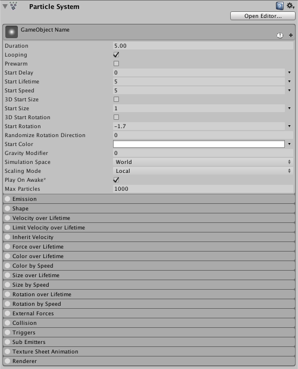

Particle System Main module
The Particle System module contains global properties that affect the whole system. Most of these properties control the initial state of newly created particles. To expand and collapse the main module, click the Particle System bar in the Inspector window.

The name of the module appears in the inspector as the name of the GameObject that the Particle System component is attached to.
Properties
| Property | Function |
|---|---|
| Duration | The length of time the system runs. |
| Looping | If enabled, the system starts again at the end of its duration time and continues to repeat the cycle. |
| Prewarm | If enabled, the system is initialized as though it had already completed a full cycle (only works if Looping is also enabled). |
| Start Delay | Delay in seconds before the system starts emitting once enabled. |
| Start Lifetime | The initial lifetime for particles. |
| Start Speed | The initial speed of each particle in the appropriate direction. |
| 3D Start Size | Enable this if you want to control the size of each axis separately. |
| Start Size | The initial size of each particle. |
| 3D Start Rotation | Enable this if you want to control the rotation of each axis separately. |
| Start Rotation | The initial rotation angle of each particle. |
| Randomize Rotation Direction | Causes some particles to spin in the opposite direction. |
| Start Color | The initial color of each particle. |
| Gravity Modifier | Scales the gravity value set in the Physics window. A value of zero switches gravity off. |
| Simulation Space | Controls whether particles are animated in the parent object’s local space (therefore moving with the parent object), in the world space, or relative to a custom object (moving with a custom object of your choosing). |
| Simulation Speed | Adjust the speed at which the entire system updates. |
| Delta Time | Choose between Scaled and Unscaled, where Scaled uses the Time Scale value in the Time window, and Unscaled ignores it. This is useful for Particle Systems that appear on a Pause Menu, for example. |
| Scaling Mode | Choose how to use the scale from the transform. Set to Hierarchy, Local or Shape. Local applies only the Particle System transform scale, ignoring any parents. Shape mode applies the scale to the start positions of the particles, but does not affect their size. |
| Play on Awake | If enabled, the Particle System starts automatically when the object is created. |
| Emitter Velocity | Choose how the Particle System calculates the velocity used by the Inherit Velocity and Emission modules. The system can calculate the velocity using a Rigidbody component, if one exists, or by tracking the movement of the Transform component. |
| Max Particles | The maximum number of particles in the system at once. If the limit is reached, some particles are removed. |
| Auto Random Seed | If enabled, the Particle System looks different each time it is played. When set to false, the system is exactly the same every time it is played. |
| Random Seed | When disabling the automatic random seed, this value is used to create a unique repeatable effect. |
| Stop Action | When all the particles belonging to the system have finished, it is possible to make the system perform an action. A system is determined to have stopped when all its particles have died, and its age has exceeded its Duration. For looping systems, this only happens if the system is stopped via script. |
| Disable | The GameObject is disabled. |
| Destroy | The GameObject is destroyed. |
| Callback | The OnParticleSystemStopped callback is sent to any scripts attached to the GameObject. |
| Culling Mode | Choose whether to pause Particle System simulation when particles are offscreen. Culling when offscreen is most efficient, but you may want to continue simulation for off-one effects. |
| Automatic | Looping systems use Pause, and all other system use Always Simulate. |
| Pause And Catch-up | The system stops simulating while offscreen. When re-entering the view, the simulation performs a large step to reach the point where it would have been had it not paused. In complex systems, this option can cause performance spikes. |
| Pause | The system stops simulating while offscreen. |
| Always Simulate | The system processes its simulation on each frame, regardless of whether it is on screen or not. This can be useful for one-shot effects such as fireworks, where during the simulation would be obvious. |
| Ring Buffer Mode | Keeps particles alive until they reach the Max Particles count, at which point new particles recycle the oldest ones, instead of removing particles when their lifetimes elapse. |
| Disabled | Disable Ring Buffer Mode, so the system removes particles when their lifetime elapses. |
| Pause Until Replaced | Pauses old particles at the end of their lifetime until the Max Particle limit is reached, at which point the system recycles them, so they reappear as new particles. |
| Loop Until Replaced | At the end of their lifetime, particles rewind back to the specified proportion of their lifetime until the Max Particle limit is reached, at which point the system recycles them, so they reappear as new particles. |
Property details
The system emits particles for a specific duration, and can be set to emit continuously using the Looped property. This allows you to set particles to be emitted intermittently or continuously; for example, an object may emit smoke in short puffs or in a steady stream.
The Start properties (lifetime, speed, size, rotation and color) specify the state of a particle on emission. You can specify a particle’s width, height and depth independently, using the 3D Start Size property (see Non-uniform particle scaling, below).
All Particle Systems use the same gravity vector specified in the Physics settings. The Gravity Multiplier value can be used to scale the gravity, or switch it off if set to zero.
Non-uniform particle scaling
The 3D Start Size property allows you to specify a particle’s width, height and depth independently. In the Particle System Main module, check the 3D Start Size checkbox, and enter the values for the initial x (width), y (height) and z (depth) of the particle. Note that z (depth) only applies to 3D Mesh particles. You can also set randomised values for these properties, in a range between two constants or curves.
You can set the particle’s initial size in the Particle System Main module, and its size over the particle’s lifetime using the Separate Axes option in the Size over Lifetime module. You can also set the particle’s size in relation to its speed using the Separate Axes option in the Size by Speed module.
Simulation Space
The Simulation Space property determines whether the particles move with the Particle System parent object, a custom object, or independently in the game world. For example, systems like clouds, hoses and flamethrowers need to be set independently of their parent GameObject, as they tend to leave trails that persist in the world space even if the object producing them moves around. On the other hand, if particles are used to create a spark between two electrodes, the particles should move along with the parent object. For more advanced control over how particles follow their Transform, see documentation on the Inherit Velocity module.
When set to Custom, particles no longer move relative to their own Transform component. Instead, they all move relative to the movement of the specified Transform component. The Particle System uses the Custom Transform to calculate emitter velocity, which the Inherit Velocity module and Rate over Distance property of the Emission module use to control particle velocity and emission.